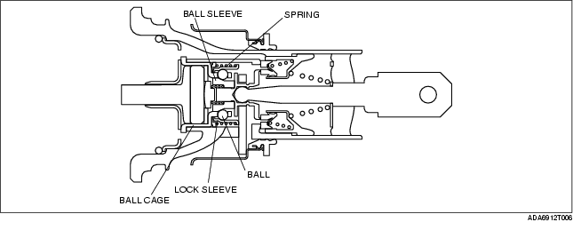
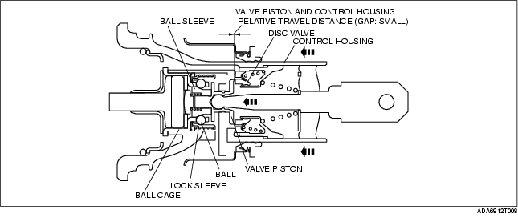

Power brake unit construction/operation
Construction
• The basic construction of the power brake unit with brake assist function is the same as a conventional unit with the addition of the following parts:

Operation
Operation outline
• When the brake pedal is depressed, the valve piston, inside the power brake unit, moves ahead of the control housing to create a relative travel distance which the brake assist function utilizes. This relative travel distance varies in relation to pedal speed depression and force in the following ways.
- - Slow and weak pedal force applied (normal braking): Small relative travel distance
- - Quick and strong pedal force applied (emergency braking): Large relative travel distance
• The brake assist function determines emergency braking when the relative difference exceeds the specified amount.

During normal braking
• During normal braking, due to the relative travel distance of the valve piston and control housing being extremely small, the lock sleeve is held in its original position by the force applied by the spring. At the same time, the ball cage remains free to move axially and the balls remain free to move vertically.
• Therefore, the ball sleeve moves following the control housing, thereby closing the disc valve. This allows hydraulic pressure to be applied in relation to the pedal force of the driver.

During brake assist operation
• During emergency braking, the relative travel distance of the valve piston and control housing exceeds the specified amount for brake assist. When this occurs, the balls are moved in over the slope of the ball sleeve and the lock sleeve is moved up against the key. Due to this, the balls become locked and the ball sleeve can no longer be moved in the closing direction of the disc valve.
• Consequently, the brake assist functions by maintaining the increased hydraulic pressure in the power brake unit at its maximum (wheel locking limit), regardless of the pedal force applied.
• The amount of change in braking force during brake assist operation is the same as the brake pedal stroke amount (pedal force).

After brake assist release
• When the brake pedal is fully released, the control housing and valve piston return to their original position. The key is pressed against the vacuum cylinder, and the lock sleeve is slid back to its original position the same time as the balls are moved outward by the ball sleeve.
• As a result, the ball sleeve is again free to move axially and the balls are free to move vertically. Braking operation returns to normal.